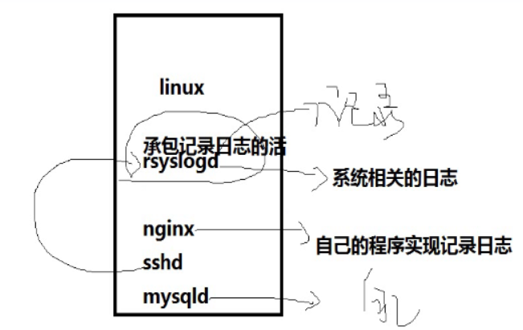
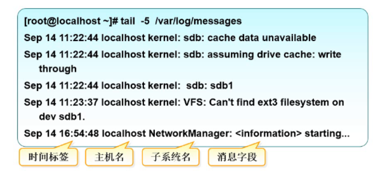
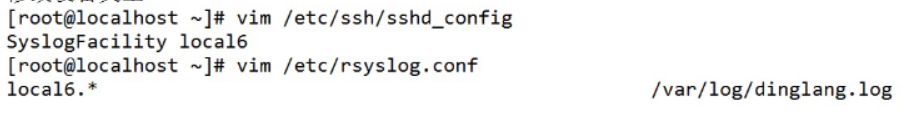
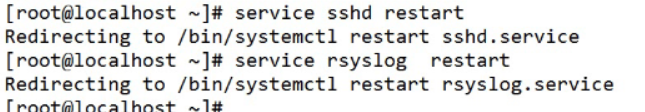
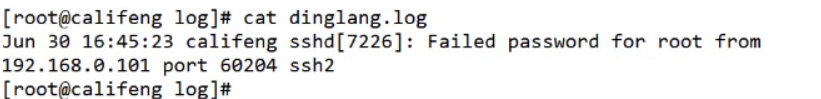

日志（log）
什么是日志
- 其实就是我们的Linux系统或者某个应用程序，将发生的事情记录下来的文本信息就是日志—-》log
有什么作用
- 用来排除差错或者查询相关信息
- 用于记录系统、程序运行中发生的各种事件
- 通过阅读日志，有助于诊断和解决系统故障
nginx 的日志文件
存放在/var/log/nginx
access.log
记录正常的访问
1
2
3
4
5
6[root@PC1 nginx]# cat access.log
192.168.0.37 - - [18/Oct/2019:15:48:56 +0800] "GET / HTTP/1.1" 200 3700 "-" "Mozilla/5.0 (Windows NT 10.0; Win64; x64) AppleWebKit/537.36 (KHTML, like Gecko) Chrome/76.0.3809.100 Safari/537.36" "-"
192.168.0.37 - - [18/Oct/2019:15:48:56 +0800] "GET /nginx-logo.png HTTP/1.1" 200 368 "http://192.168.0.234/" "Mozilla/5.0 (Windows NT 10.0; Win64; x64) AppleWebKit/537.36 (KHTML, like Gecko) Chrome/76.0.3809.100 Safari/537.36" "-"
192.168.0.37 - - [18/Oct/2019:15:48:56 +0800] "GET /poweredby.png HTTP/1.1" 200 2811 "http://192.168.0.234/" "Mozilla/5.0 (Windows NT 10.0; Win64; x64) AppleWebKit/537.36 (KHTML, like Gecko) Chrome/76.0.3809.100 Safari/537.36" "-"
192.168.0.37 - - [18/Oct/2019:15:48:56 +0800] "GET /favicon.ico HTTP/1.1" 404 3650 "http://192.168.0.234/" "Mozilla/5.0 (Windows NT 10.0; Win64; x64) AppleWebKit/537.36 (KHTML, like Gecko) Chrome/76.0.3809.100 Safari/537.36" "-"
[root@PC1 nginx]#
error.log
记录出错的访问
1
2
3
4
5
6
7
8[root@PC1 nginx]# cat error.log
2019/10/18 15:38:52 [emerg] 19417#0: bind() to 0.0.0.0:80 failed (98: Address already in use)
2019/10/18 15:38:52 [emerg] 19417#0: bind() to [::]:80 failed (98: Address already in use)
2019/10/18 15:38:52 [emerg] 19417#0: bind() to 0.0.0.0:80 failed (98: Address already in use)
2019/10/18 15:38:52 [emerg] 19417#0: bind() to [::]:80 failed (98: Address already in use)
2019/10/18 15:38:52 [emerg] 19417#0: bind() to 0.0.0.0:80 failed (98: Address already in use)
2019/10/18 15:38:52 [emerg] 19417#0: bind() to [::]:80 failed (98: Address already in use)
2019/10/18 15:38:52 [emerg] 19417#0: bind() to 0.0.0.0:80 failed (98: Address already in us
日志的分类
- 内核及系统日志
- 由系统服务rsyslogd统一进行管理， 日志格式基本相似
- linux的kernel出问题基本是是rsyslogd记日志
- rsyslogd—》日志承包商—》专供系统使用的，也可以帮助用户进程记录日志
- 用户日志
- 记录系统用户登录及退出系统的相关信息
- 程序日志
- 由各种应用程序独立管理的日志文件，记录格式不统一
- 
日志的一般格式
- 
日志的配置文件
/etc/rsyslog.conf
1
2
3
4
5
6
7
8
9
10
11
12
13
14
15
16
17
18
19
20
21
22
23
24
25
26
27
28
29
30
31
32- [root@biubiu ~]# vim /etc/rsyslog.conf
- # Log anything (except mail) of level info or higher.
# Don't log private authentication messages!
#所有的设备类型的info以上级别都记录到/var/log/messages文件里，但是mail,authpric,cron这几个设备类型不记录
*.info;mail.none;authpriv.none;cron.none /var/log/messages
# The authpriv file has restricted access.
authpriv.* /var/log/secure
# Log all the mail messages in one place.
mail.* -/var/log/maillog
# Log cron stuff
cron.* /var/log/cron
# Everybody gets emergency messages
*.emerg :omusrmsg:*
# Save news errors of level crit and higher in a special file.
uucp,news.crit /var/log/spooler
# Save boot messages also to boot.log
local7.*- /var/log/messages会记录几乎常 见的日志信息，特别是你不知道到哪里去看日志的时候可以到此一游，看看有没有日志信息
rsyslogd记录日志的时候需要确定3个东西:
1.设备类型
2.消息级别
3.记录到哪里sshd进程—>rsyslog
- INFO
- authpriv
修改配置文件
1
2
3
4[root@biubiu ssh]# vim /etc/rsyslog.conf
[root@biubiu ssh]# service rsyslog restart 刷新服务
Redirecting to /bin/systemctl restart rsyslog.service
[root@biubiu ssh]#查看效果
1
2
3
4
5
6
7
8[root@biubiu log]# tailf leizhengjie.log
Oct 18 16:49:57 biubiu polkitd[660]: Unregistered Authentication Agent for unix-process:23357:15885233 (system bus name :1.1274, object path /org/freedesktop/PolicyKit1/AuthenticationAgent, locale en_us-utf8) (disconnected from bus)
Oct 18 16:51:07 biubiu unix_chkpwd[23391]: password check failed for user (root)
Oct 18 16:51:07 biubiu sshd[23389]: pam_unix(sshd:auth): authentication failure; logname= uid=0 euid=0 tty=ssh ruser= rhost=biubiu user=root
Oct 18 16:51:07 biubiu sshd[23389]: pam_succeed_if(sshd:auth): requirement "uid >= 1000" not met by user "root"
Oct 18 16:51:09 biubiu sshd[23389]: Failed password for root from 192.168.0.234 port 55128 ssh2
Oct 18 16:51:54 biubiu sshd[23389]: Accepted password for root from 192.168.0.234 port 55128 ssh2
Oct 18 16:51:54 biubiu sshd[23389]: pam_unix(sshd:session): session opened for user root by (uid=0
修改设备类型
- 
刷新2个服务
- 
结果
- 
日志消息的级别（level）
0 EMERG (紧急) :会导致主机系统不可用的情况.
1 ALERT(警告):必须马上采取措施解决的问题
2 CRIT (严重) :比较严重的情况
3 ERR (错误) :运行出现错误 —-》异常里最多的—》程序不能运行了
4 WARNING (提醒) :可能会影响系统功能的事件
5 NOTICE (注意) :不会影响系统但值得注意
6 INFO(信息):一般信息
7 DEBUG (调试) :程序或系统调试信息等8 none ：不记录
设备类型
类别
- AUTHPRIV
- 与认证有关的设备—》sshd服务需要登录，登录需要验证
- cron
- 与计划任务相关
- mail
- 与邮件相关
- kern
- 与linux内核相关
- local1~7
- 自定义的设备类型
- AUTHPRIV
设备类别【连接符】日志级别
- . :记录大于等于后面的级别日志
- .=:只记录等于后面的级别日志
- . !=:只记录不等于后面的级别日志
1
2
3
4# Logging
#SyslogFacility AUTH
SyslogFacility AUTHPRIV
#LogLevel INFO INFO级别以上的都会被记录cron.* /var/log/cron
cron.info /var/log/cron
#cron这种类型的info以上级别的日志都记录到/var/log/cron文件里面去
authpriv.* /var/log/secure
#记录authpriv这种设备类型所有级别的日志到/var/log/ secure
- *表示所有的日志级别
常见日志文件
sshd的日志
- /var/log/secure
- /var/log/message
- /var/log/cron
NGINX的日志
- /var/log/nginx
主要日志文件介绍
■内核及公共消息日志: /varlog/messages
■计划任务日志: lvarlog/cron
■系统引导日志: Ivarlog/dmesg
■邮件系统日志: lvar/log/maillog
■错误登录日志: /var/log/faillogyum.log
- yum 安装过软件的日志
boot.log
- Linux系统启动时候的日志，哪些服务启动了，哪些没启动
secure
- 与安全相关的日志，特别是sshd默认的日志文件
日志文件非常重要，需要定时备份—-》所以需要计划任务去执行脚本备份
日志命令
主动记录日志工具
logger :从命令行直接向系统日志文件写入一-行信息
- -it :给记录的日志打标记
- -p 指定设备类型和消息级别
1
2
3
4
5
6
7
8
9
10
11
12[root@biubiu mariadb]# ping -c 2 192.168.0.234 | logger -it 'biubiu' -p authpriv.info
[root@biubiu mariadb]# tailf /var/log/leizhengjie.log
Oct 18 17:03:38 biubiu polkitd[660]: Unregistered Authentication Agent for unix-process:23561:15967410 (system bus name :1.1307, object path /org/freedesktop/PolicyKit1/AuthenticationAgent, locale en_us-utf8) (disconnected from bus)
Oct 18 17:03:46 biubiu polkitd[660]: Registered Authentication Agent for unix-process:23577:15968240 (system bus name :1.1308 [/usr/bin/pkttyagent --notify-fd 5 --fallback], object path /org/freedesktop/PolicyKit1/AuthenticationAgent, locale en_us-utf8)
Oct 18 17:03:51 biubiu polkitd[660]: Unregistered Authentication Agent for unix-process:23577:15968240 (system bus name :1.1308, object path /org/freedesktop/PolicyKit1/AuthenticationAgent, locale en_us-utf8) (disconnected from bus)
Oct 18 17:17:15 biubiu biubiu[23975]: PING 192.168.0.234 (192.168.0.234) 56(84) bytes of data.
Oct 18 17:17:15 biubiu biubiu[23975]: 64 bytes from 192.168.0.234: icmp_seq=1 ttl=64 time=0.072 ms
Oct 18 17:17:16 biubiu biubiu[23975]: 64 bytes from 192.168.0.234: icmp_seq=2 ttl=64 time=0.060 ms
Oct 18 17:17:16 biubiu biubiu[23975]:
Oct 18 17:17:16 biubiu biubiu[23975]: --- 192.168.0.234 ping statistics ---
Oct 18 17:17:16 biubiu biubiu[23975]: 2 packets transmitted, 2 received, 0% packet loss, time 1001ms
Oct 18 17:17:16 biubiu biubiu[23975]: rtt min/avg/max/mdev = 0.060/0.066/0.072/0.006 ms- 使用logger比直接重定向里多了时间、主机、进程、事情都记录下来了，信息更加丰富
今后写shell脚本，可以考虑使用logger来记录日志，需要和rsyslog配合
日志轮转（切割）
日志记录会随着运行时间的增长不断增加 ，日志文件所占用的空间也越来越大 利用logrotate 日志轮转机制。可以有效控制日志规模 ，实现自动化运维
日志的轮转是一种日志管理策略，可以简化管理。
引入
以/var/log/messages日志文件为例：
先分四步讲解下轮转的过程。
1.系统只有messages文件，还没有轮转
touch messages
2.第一次轮转生成messages.1
mv messages messages.1
touch messages
3.第二次轮转生成messages.2
mv messages.1 messages.2
mv messages messages.1
touch messages
4.第三次轮转生成messages.3
mv messages.2 messages.3
mv messages.1 messages.2
mv messages messages.1
touch messages
这样日志达到一定条件就会这样不断生成新的文件，可以看出，日志的轮转其本质就是旧文件的移动和新文件的创建。
日志轮转的主配置文件： /etc/logrotate.conf
1
2
3
4
5
6
7
8
9
10
11
12
13
14
15
16
17
18
19[root@biubiu mariadb]# cat /etc/logrotate.conf |grep -v ^#|grep -v ^$
weekly
rotate 4
create
dateext
include /etc/logrotate.d
/var/log/wtmp {
monthly
create 0664 root utmp
minsize 1M
rotate 1
}
/var/log/btmp {
missingok
monthly
create 0600 root utmp
rotate 1
}
[root@biubiu mariadb]#全局配置
weekly ：表示所有日志每周进行一次轮转
rotate 4 ：表示所有日志默认只保留一个旧文件
create ：由于旧文件被轮转了，所以新建一个日志文件来存储日志include /etc/logrotate.d ：次配置文件所在目录
/var/log/wtmp为局部配置：
monthly ：表示所有日志每周进行一次轮转
minsize 1M ：轮转日志的最小大小
create 0664 root utmp ：创建文件时，指定权限、属主和属组
rotate 1 ：保留一个旧文件
这个 wtmp 可记录用户登录系统及系统重启的时间
# 因为有 minsize 的参数，因此不见得每个月一定会执行一次喔.要看文件大小。
logrotate参数说明
daily — 每日旋转日志文件。
weekly — 每周旋转日志文件。
monthly — 每月旋转日志文件。compress — 用gzip压缩旋转的日志文件。
size size — 在日志文件达到一定大小时开始旋转。大小是以bytes (默认), kilobytes (sizek)或megabytes (sizem)计算。
nocompress — 在不需要压缩旋转日志文件的情况下使用。
delaycompress — 在使用压缩选择时，旋转文件不会在下一个循环开始时被压缩。
copytruncate — 用于还在打开中的日志文件，把当前日志备份并截。复制当前的日志文件,并置空当前文件。
nocopytruncate — 把日志文件复制进备份，但该开放文件不会被裁剪。
dateext - 用时间格式表示日志，轮换的日志后缀为-YYYYMMDD格式
daily 指定转储周期为每天
weekly 指定转储周期为每周
monthly 指定转储周期为每月
rotate count 指定日志文件删除之前转储的次数，0 指没有备份，5 指保留5 个备份rotate count — 在删除前旋转文件的特定次数。如果计数为零，就意味着没有副本保留。而5则意味着保留5个副本。
create mode owner group — 旋转日志文件并创建允许特定组合用户的新文件。缺省是使用与原始文件一样的模式，组合用户。
missiongok - 如果文件找不到的话不会报错，直接跳过
nocreate — 可以防止产生新日志文件。
nodelaycompress – 日志文件会在循环过程中被压缩。
errors address — 将logrotate错误邮件发送到某个地址。
ifempty — 即使在空文件时也要旋转。这是Logrotate的缺省项。
notifempty — 空文件不旋转。
mail address — 这个邮件日志文件是循环到一个地址，因此能有效从系统中清楚。
nomail - 在邮件日志循环时，副本不邮寄。
olddir directory — 这个选项会将循环日志文件保持在特定目录。该目录必需与现有日志文件在同一文件系统。
noolddir — 循环的日志文件与现有文件处于相同目录。
prerotate/endscript - 在转储以前需要执行的命令可以放入这个对，这两个关键字必须单独成行
postrotate/endscript - 在转储以后需要执行的命令可以放入这个对，这两个关键字必须单独成行
其他参数可自行通过man logrotate查看帮助。
查看各log文件的具体执行情况
[root@fangfull_web1 ~]# cat /var/lib/logrotate/logrotate.status1
2
3
4
5
6
7
8
9
10
11
12
13
14
15
16
17
18
19
20
21
22[root@biubiu mariadb]# cat /var/lib/logrotate/logrotate.status
logrotate state -- version 2
"/var/log/nginx/error.log" 2019-10-18-16:41:2
"/var/log/yum.log" 2019-10-18-17:36:10
"/var/log/boot.log" 2019-10-13-19:50:1
"/var/log/redis/redis.log" 2019-10-7-11:7:1
"/var/log/httpd/error_log" 2019-10-13-19:50:1
"/var/log/wtmp" 2019-7-4-20:0:0
"/var/log/chrony/*.log" 2019-7-4-20:0:0
"/var/log/spooler" 2019-10-13-19:50:1
"/var/log/btmp" 2019-10-4-19:19:1
"/var/log/xferlog" 2019-10-13-19:50:1
"/var/log/maillog" 2019-10-13-19:50:1
"/var/log/wpa_supplicant.log" 2019-7-4-20:0:0
"/var/log/secure" 2019-10-13-19:50:1
"/var/log/nginx/access.log" 2019-10-18-16:41:2
"/var/log/squid/cache.log" 2019-10-17-15:0:0
"/var/log/messages" 2019-10-13-19:50:1
"/var/log/httpd/access_log" 2019-10-7-11:0:0
"/var/log/cron" 2019-10-13-19:50:1
"/var/log/vsftpd.log" 2019-10-7-11:0:0
[root@biubiu mariadb]#